3D Model Creation
In this chapter, we will assemble 3d model parts for visualization in Stellar X. In terms of applying to real workflow, we're going to assume that you finished your CAD design and have 3d model files for each links. If you are using manufactured robots, you should have your technical specification ready for DH-parameters, joint limits, physics property etc. This step is purely for visualization and optional, so you can skip it and have no problem moving forward. We'll be using 6-axis manipulator for this example. Please download 3d models from link below and unzip it.
{kind=link}
1. Basic Design Criteria
We'll be using blender for this step. Blender accepts most of major 3d model formats except some proprietary ones. You don't have to use blender, but the naming convention, model tree, output file format must be matched.
1. Blender Preferences
{kind=link}
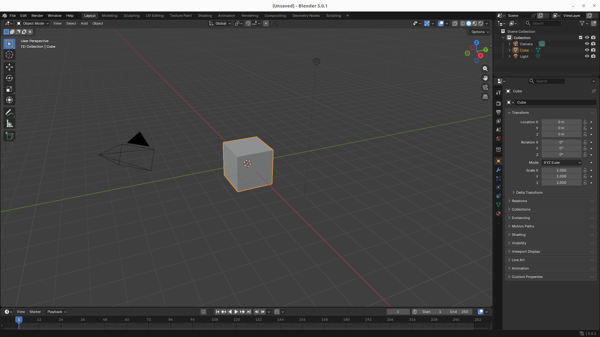
- First, open blender and delete default
Camera,CubeandLight.
2. Joint and Link Creation
1. Naming Conventions
Base
| Classification | Name |
|---|---|
| Joint | J0 |
| Link | link0 |
Joint
J1~Jn
Link
link1~linkn
n increases with the number of joints.
2. Create Joints
{kind=link}
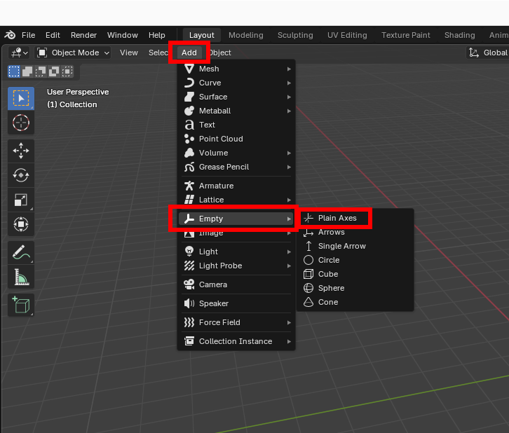
{kind=link}
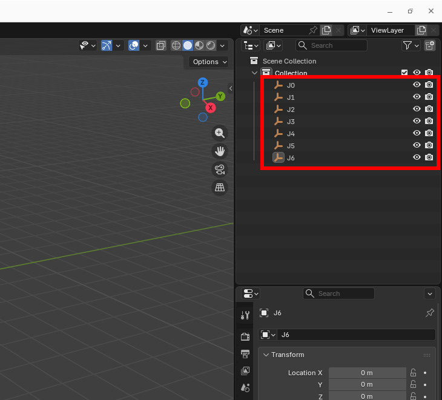
- Click
Add->Empty->Plain Axesto add axes. Add total of 7 axes and rename them to J0 ~ J7. These names act as joints in Designer and their name must beJ{number}.
3. Add links
{kind=link}
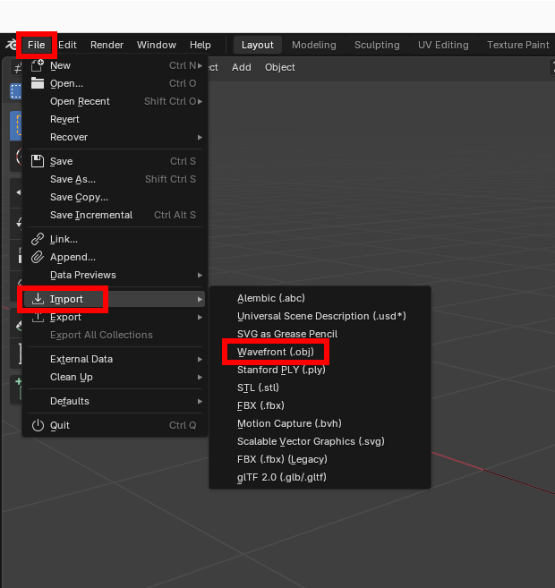
{kind=link}
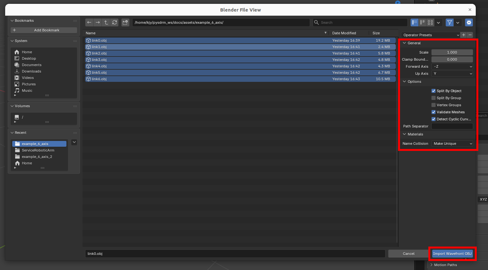
{kind=link}
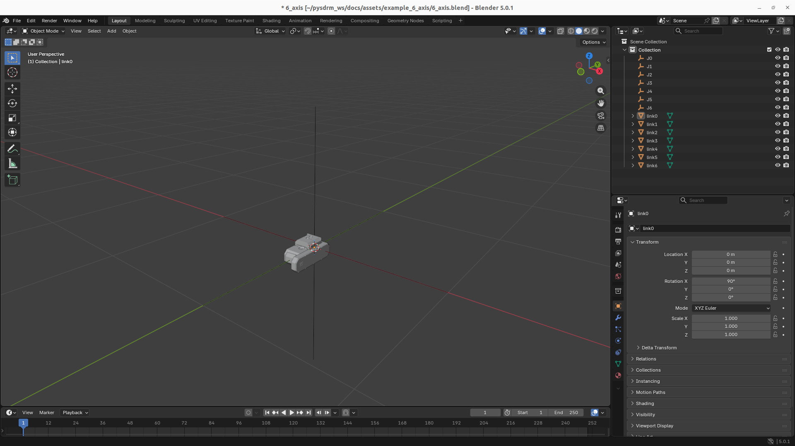
- Now, we are going to add 3d models. Click
File->Import->Wavefront. Go to saved directory and import all 7 of them. Be aware of import settings. If imported successfully, it should look like bottom picture.
{kind=link}
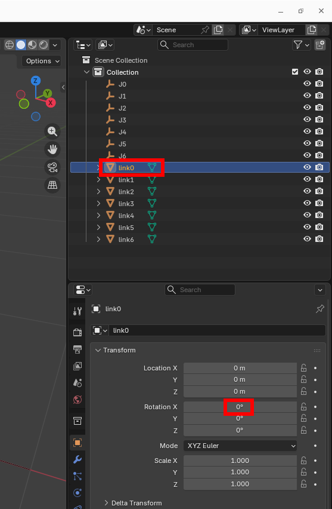
{kind=link}
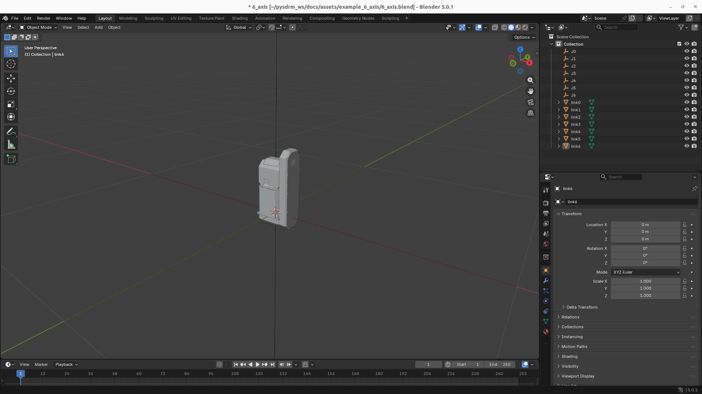
- Click
link0->Rotation Xand enter0. The part should now stand up. Repeat this for all the other parts.
4. Joint–Link Connection
Each link model must be moved under its corresponding joint.
{kind=link}
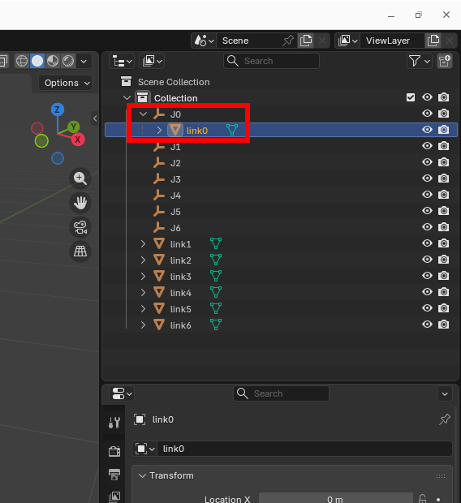
{kind=link}
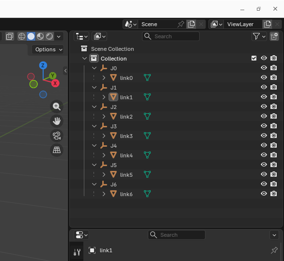
- Select
link0and shift-drag the link to theJ0joint.link0should now lay underJ0. Repeat it for all the other links.
2. Hierarchical Structure
The robot must be configured in a serial manipulator configuration.
1. Basic Structure
World
└── root
└── links
└── J0
├── link0
└── J1
├── link1
└── J2
├── link2
└── J3
├── link3
└── J4
├── link4
└── J5
├── link5
└── J6
└── link6
2. Structure Description
| Item | Description |
|---|---|
| World | 3D Tool Basic Scene |
| root | Robot Base Node |
| links | Joint Group |
| J0~Jn | Joint Nodes |
| link0~linkn | Link Model |
3. Precautions when Creating a Structure
- All joints (
Jn) must be set as children of the parent link. - Each link (
linkn) must be set as a child of its corresponding joint (Jn). - If the hierarchy is incorrect, the robot structure will not function properly.
3. Model Creation Method (Blender-Based Example)
This section describes the process of importing an existing robot model into Blender and then modifying its structure and settings to conform to the Structure Specification.
1. Basic Environment Settings
- Launch Blender
2. Importing an Existing Robot Model
- Import an existing robot model file.
- File → Import → (Select Model Type)
3. Resetting Joint and Link Structure
1. Setting Joint Node Names
- Setting Joint Names
- Joint:
J0~Jn
- Joint:
- Setting Link Names
- Link:
link1~linkn
- Link:
2. Resetting Parent-Child Relationships
- Rearrange each joint and link to the following structure:
Jn
├ linkn
└ J(n+1)
3. How to set up a hierarchy in Blender
4. Setting Coordinate Axes and Rotation Axes
- Set the rotation axis of each joint (
Jn) based on the DH parameters. - Use rotation based on the Local Axis.
- Do not use rotation based on the World Axis.
{kind=link}
{kind=link}
4. How to Export GLB Files (Blender)
1. Export Menu
- File → Export → glTF 2.0 (.glb/.gltf)
2. Required Export Options
- Set the following in the Export window:
Transform Settings
+Y Up: Disabled
This must be disabled to prevent coordinate transformation errors.
{kind=link}
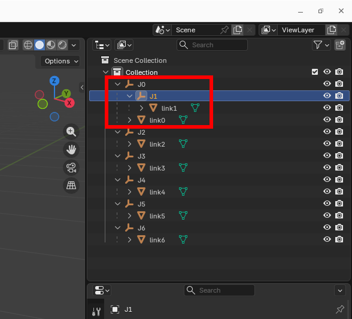
- Select
J1and shift-drag the joint toJ0joint. BothJ1andlink1should be under J0. Repeat same process forJ2toJ1,J3toJ2etc. Result should look like picture below.
{kind=link}
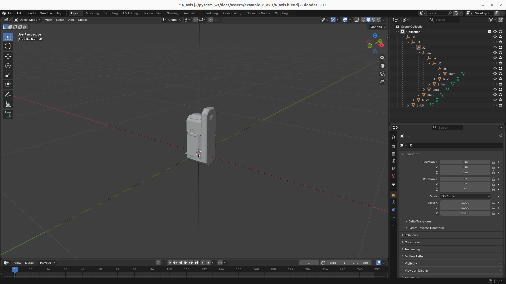
4. Aligning DH Parameters with Model Structure
The joint structure set in Blender must match the DH parameters in Stellar Designer.
1. DH Parameter
DH parameters are defined by transforming each joint coordinate system in the following order: |
Application order:
1. Z-axis rotation (θ)
2. Z-axis translation (d)
3. X-axis translation (a)
4. X-axis rotation (α)
This order cannot be changed and is the default rule for coordinate system calculations.
2. Matching modeling and dh parameters in Blender
{kind=link}
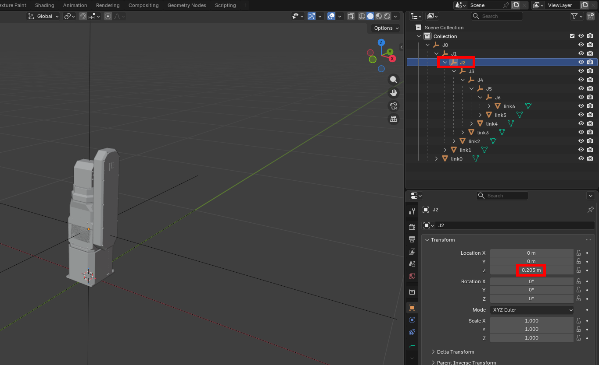
- Shows the joint hierarchy in Blender.
{kind=link}
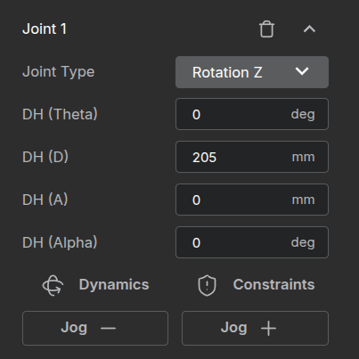
- Shows the DH parameter settings for J1 in Stellar Designer.
This means that J1 is transformed in the following order:
1. No rotation about the Z-axis (θ = 0)
2. Translation of 205 mm along the Z-axis (d = 205)
3. No translation along the X-axis (a = 0)
4. No rotation about the X-axis (α = 0)
As a result, the coordinate frame of J2 is generated at a position
205 mm above J1 along the Z-axis.
- Click
J2->Location zand enter0.205. link2and all the other links underJ2should move upward.- These values are same as DH-parameters, so if you have your own robot, you should follow your own values.
{kind=link}
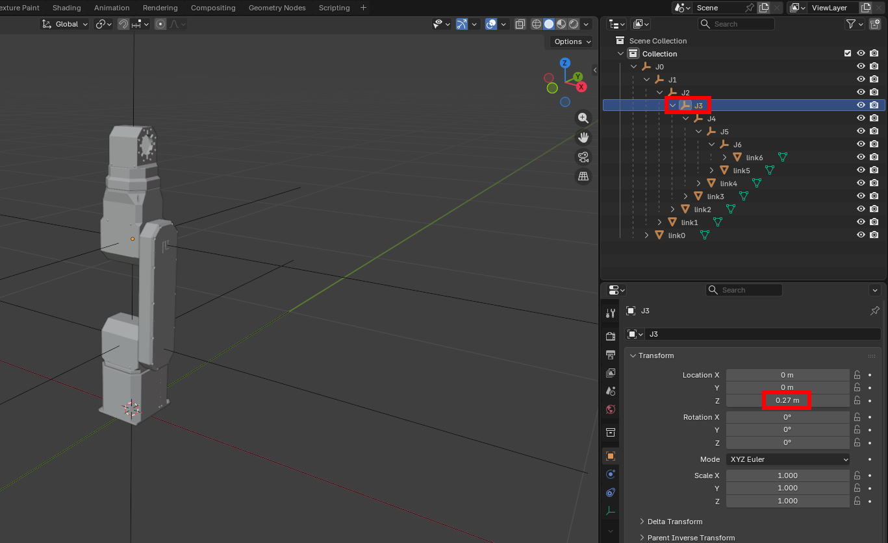
{kind=link}
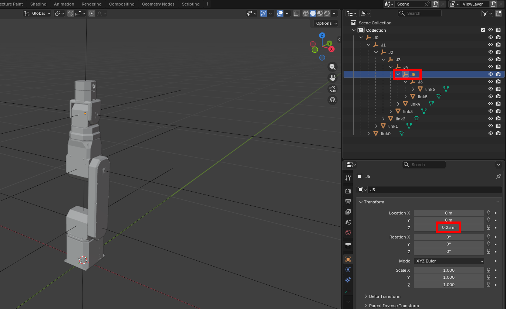
{kind=link}
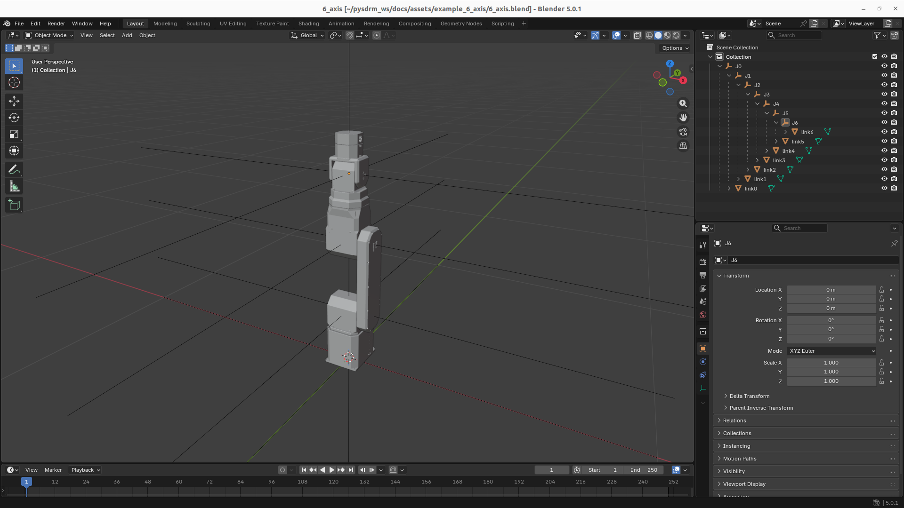
- For
J3, enter0.27, and forJ5, enter0.23. Final result should look like bottom picture.
When making your own robot, your parts may not align with the axes from DH-parameters. In that case, you have to adjust the position of the mesh itself from your CAD program. The base's position and joint positions when assembled should be { 0.0, 0.0, 0.0 } and 0, respectively.
3. How to Export GLB Files (Blender)
{kind=link}
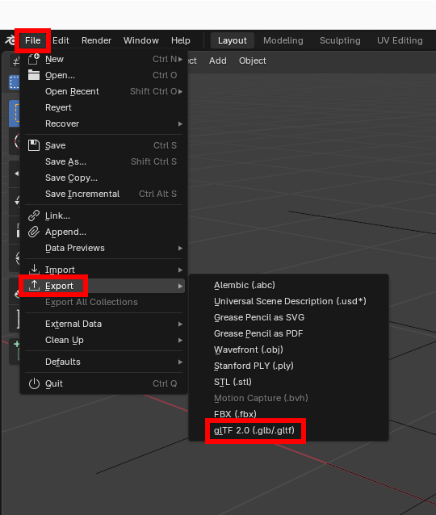
- For exporting, click
File->Export->glTF.
{kind=link}
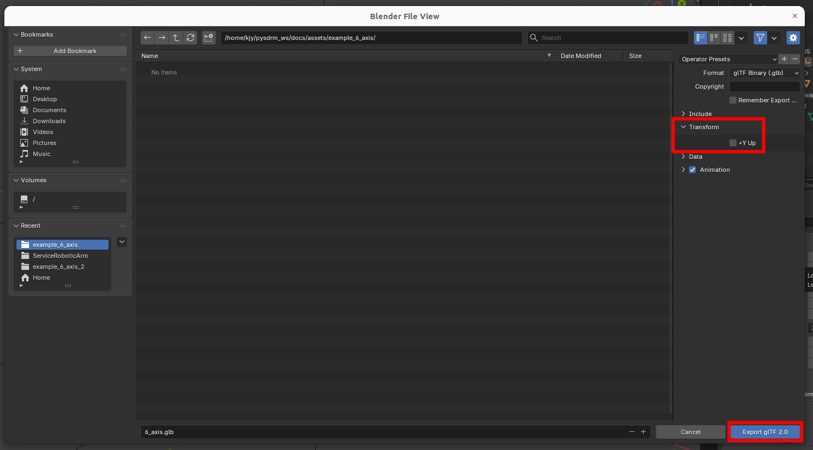
- Disable
Y Upoption. Name your model and export.
And that should be it. For those who are having troubles, i'll leave download links for final assembly.
4. Notes
- Only
.glbfiles are used in the final system. - Blender is a production example tool and is not a required tool.
- The same structure and naming conventions must be maintained when using other tools.